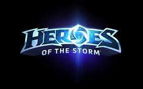

- Heroes Of The Strom
- Hearthstone
- Overwatch
- Diablo
- WOW
- Starcraft
Heroes OF The Strom
Heroes of the Storm (HotS) is a multiplayer online battle arena video game developed and published by Blizzard Entertainment for Microsoft Windows and macOS that was released on June 2, 2015. The game features heroes from Blizzard's franchises including Warcraft, Diablo, StarCraft, The Lost Vikings, and Overwatch. The game uses both free-to-play and freemium models and is supported by micropayments, which can be used to purchase heroes, visual alterations for the heroes in the game, and mounts. Blizzard does not call the game a "multiplayer online battle arena" or an "action real-time strategy" because they feel it is something different with a broader playstyle; they refer to it as an online "hero brawler".
